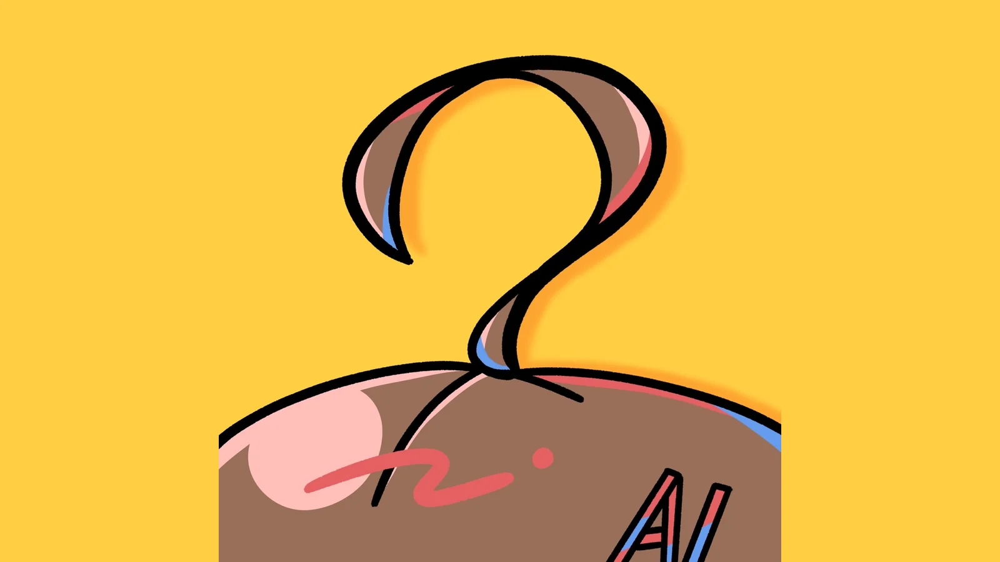
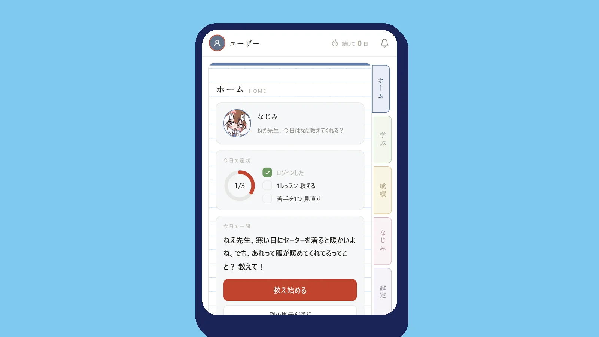

- 時期
- 2027年春 リリース予定
教えるほどに、わからないところが、見えてくる。
なじみは、わざと勘違いをしたまま質問をしてきます。
問題は解けるのに、「なぜそうするのですか」と聞かれると止まってしまう。NajoshiteAI は、教える側にまわることで、その差を自分で見つけるための道具です。
中学・高校・大学の 54 単元に対応する予定です。

担当
- 上原 貫太：企画・開発
- 小林 壮志：テスト・広報

なじみは、わざと勘違いをしたまま質問をしてきます。
問題は解けるのに、「なぜそうするのですか」と聞かれると止まってしまう。NajoshiteAI は、教える側にまわることで、その差を自分で見つけるための道具です。
中学・高校・大学の 54 単元に対応する予定です。
